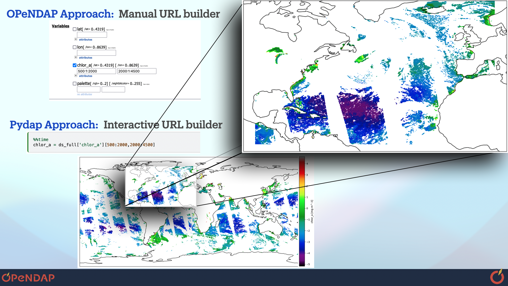

Welcome to pydap#
pydap is a Python implementation of the Data Access Protocol (DAP), also known as OPeNDAP. You can use pydap as a client to access thousands of scientific datasets available via OPeNDAP servers in a secure, transparent, and efficient way through the internet, or you can set up pydap as a server to make your data available through the internet via an URL.
Why OPeNDAP?#
Equitable open data access remains essential for advancing effective Open Science frameworks, enabling data-driven discoveries, and empowering inclusive science education and citizen science practices. At the institution level, OPeNDAP servers represent a free, open-source solution to enable data access as an alternative to the comercial cloud, as a cost-effective solution when data is stored on the cloud and data file formats that are not cloud-native, or when the collections are too large to re-format.
For researchers, educators, and citizen cientists, OPeNDAP allows to share scientific data freely under well-known standard protocols over the web, making data publishable, citeable, and findable. Importantly, data users can access and subset data in a data-proximate way, downloading only the subregion of interest.
Beginner OPeNDAP users, may rapidly find themselves spending the time to better understand OPeNDAP to enable efficient data access. Some of the OPeNDAP elements that require developing a varying degree of skill by the user to better exploit OPeNDAP are
Constraint Expressions.
Escaping URL characters for safe internet use.
Differences between DAP2 / DAP4 protocol.
Why Pydap?#
 |
|---|
Figure 1. Comparison of ways to download a subset of an entire remote file. In this example, the remote data covers the globe, and a pydap user downloads a subset by slicing the pydap array. A traditional OPeNDAP native approach is to use a Data Request Form to manually construct the URL along with its Constraint Expression. |
Pydap enables access to data on OPeNDAP servers in a pythonic way, and enables interactive and exploratory subsetting of remote datasets. To summarize pydap:
Builds Contraint Expression for the user. This is done by slicing an array (See Figure 1).
Escapes URL parameters to safely transmit data use over the internet.
Can fetch binary data from DAP2 (
.dods) and DAP4 (.dap) data servers, turning it to a numerical numpy array.Cover the DAP2 and (Most) of the DAP4 data model.
Note
Knowledge of how to construct URLs with Constraint Expressions remains important, as this can speed up (Pydap’s) dataset creation and therefore data exploration.
What Pydap is not#
Pydap is very lightweight, which is great! However, as a result it offers little parallelism, compute or plotting. Most of that is enable by external python libraries. However, Pydap remains a backend store for xarray, which fosters a growing community of developers, and xarray can add parallelism via Dask / Coiled and plotting via its oww use of matplotlib.
That said, we recognize that pydap native approaches may provide boost in performance, before using the resulting pydap dataset to create xarray dataaset. And so Pydap remains under development! See the What’s New section If you would like to contribute, head to the issue tracker. We welcome contributions! You can pick an existing issue, open a new one. You can contribute to improve our code base, or you can also help improve our documentation with a tutorial example!
Dive into the documentation to learn best practices for accessing remote data on OPeNDAP servers.
Quickstart
Documentation
Guide for Developer